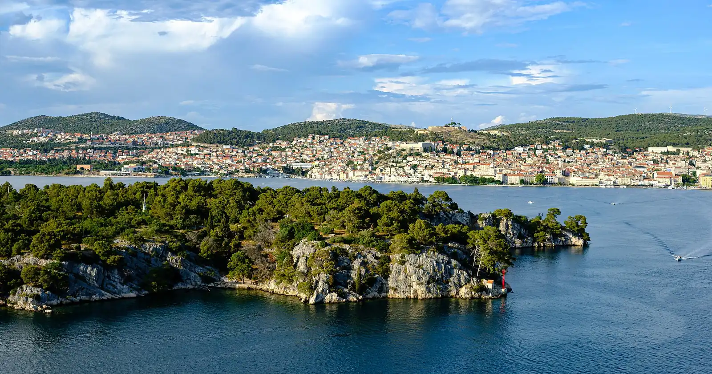
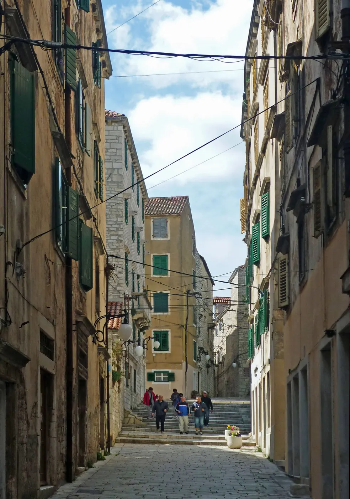
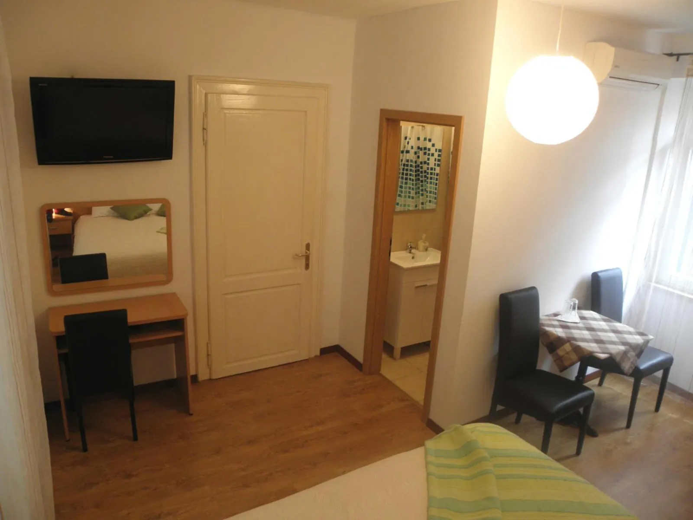
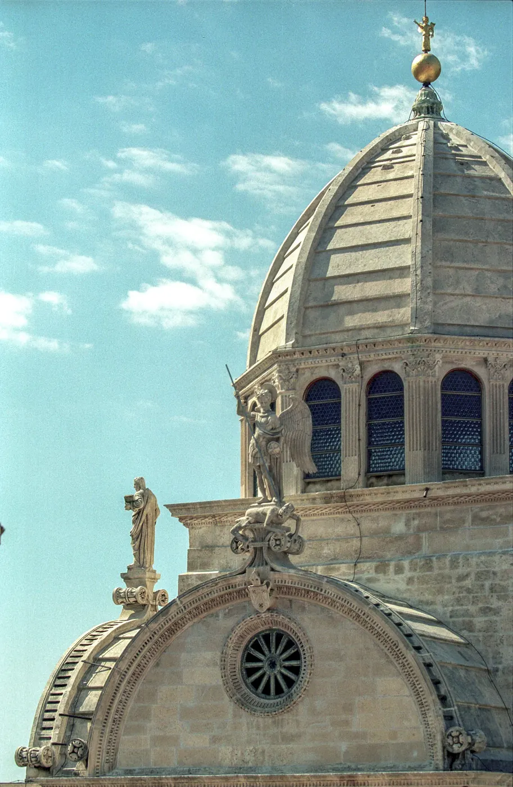
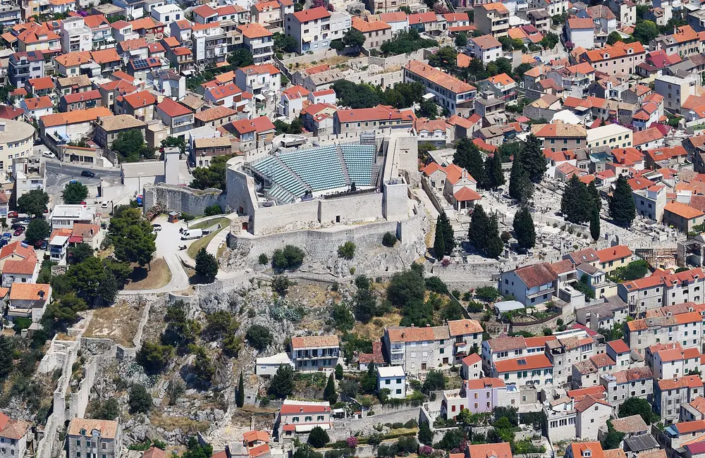
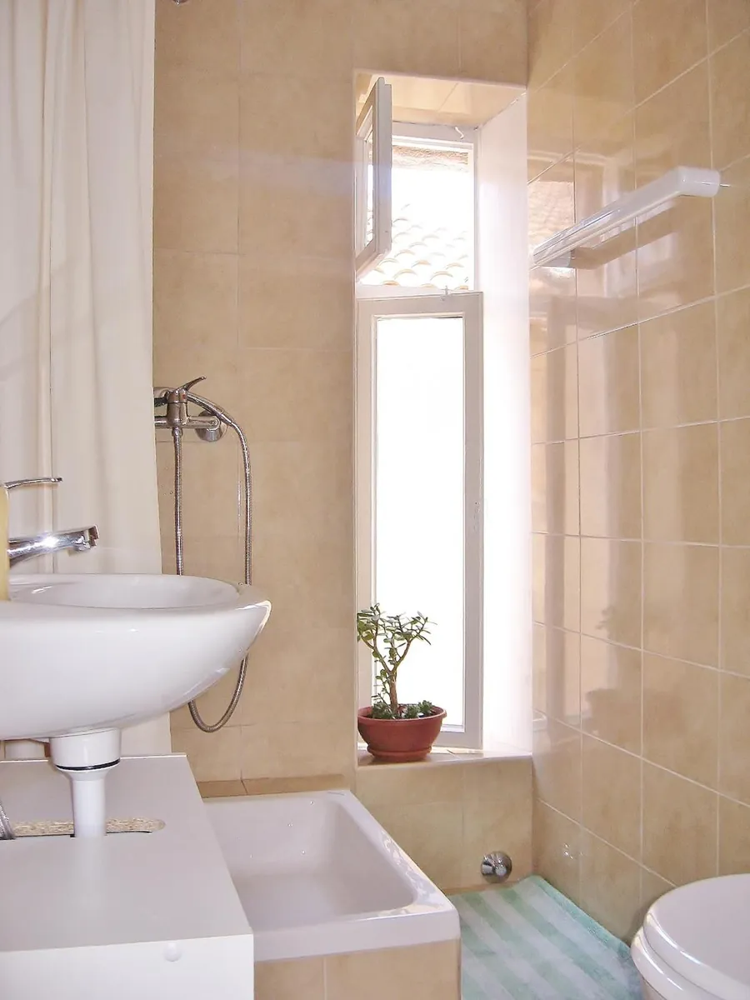

Pansion u staroj jezgri Šibenika. Stara kamena kuća, klimatizirane sobe s vlastitom kupaonicom, i cijela pješačka jezgra pred vratima.
Stara kamena kuća u jezgri Šibenika. Od ulaza do katedrale sv. Jakova ima pedeset metara, do glavne gradske plaže pet minuta hoda. Sve ostalo u ovom gradu ionako se obilazi pješice.

Sobe i apartmani uređeni u mediteranskom stilu. Sve jedinice imaju klima-uređaj, vlastitu kupaonicu, TV sa zemaljskim i satelitskim programom, zvučnu izolaciju i besplatni Wi-Fi.

Pansion se nalazi u staroj kamenoj kući u jezgri Šibenika, a sobe i apartmani uređeni su u mediteranskom stilu. Objekt je okružen restoranima, trgovinama i kafićima te kulturnim i povijesnim znamenitostima do kojih se dolazi pješice.
Gosti na Booking.comu lokaciju objekta ocjenjuju s 9,4/10, a ukupnu ocjenu 8,5/10 iz 230 recenzija (stanje 15.07.2026.). Iz jezgre se pješice kreće prema tvrđavama, rivi i gradskoj plaži.
Stara jezgra je pješačka zona. Tri mjesta do kojih se od pansiona stiže pješice.

Djelo Jurja Dalmatinca, u cijelosti sagrađeno od kamena, bez drvene građe i vezivne žbuke. Na apsidi je friz od 71 isklesane glave.

Najstarija šibenska utvrda, uz stube iznad jezgre. Unutar zidina je ljetna pozornica, a s bedema puca pogled na krovove i kanal.
Labirint stuba, prolaza i malih trgova oko pansiona. Autobusni kolodvor i trajektna luka su na pet minuta hoda.

Svaka jedinica ima vlastitu kupaonicu s kadom ili tušem, ručnike, toaletni pribor i sušilo za kosu.
Zaseban klima-uređaj u jedinici, grijanje, zvučna izolacija i besplatni bežični internet u cijelom objektu.
U svakoj smještajnoj jedinici je aparat za pripremu kave i čaja te električno kuhalo za vodu. Objekt nema restoran i ne poslužuje doručak.
Stara jezgra je pješačka zona. Javno parkiralište je u blizini objekta, bez mogućnosti rezervacije, po cijeni od 1,33 € na sat.
Ul. Andrije Kačića Miošića 5, u staroj jezgri Šibenika, 50 metara od katedrale sv. Jakova.
Pansion je u staroj gradskoj jezgri Šibenika, u Ulici Andrije Kačića Miošića, pedesetak metara od katedrale sv. Jakova i Trga Republike Hrvatske. Uz stube iznad kuće, na oko 200 metara, je tvrđava sv. Mihovila s ljetnom pozornicom i vidikovcem nad kanalom. Jezgra je pješačka zona: najbliže javno parkiralište je u blizini objekta, naplata je 1,33 € na sat i nije ga moguće rezervirati. Glavna gradska plaža te autobusni kolodvor i trajektna luka udaljeni su pet minuta hoda, a željeznički kolodvor deset. Dolazak automobilom je s D8 prema staroj jezgri, a dalje se u grad ide pješice.
Na adresi Ul. Andrije Kačića Miošića 5, u staroj jezgri Šibenika, 50 metara od katedrale sv. Jakova. Stara jezgra je pješačka zona, pa se do objekta dolazi pješice.
Prijava je od 14:00 do 22:00, a odjava do 10:00. Raniju ili kasniju prijavu i odjavu možete zatražiti kao poseban zahtjev pri rezervaciji, ali ispunjenje nije zajamčeno.
Doručak nije naveden među sadržajima objekta i nije uključen u cijenu smještaja. U svakoj smještajnoj jedinici je aparat za pripremu kave i čaja te kuhalo za vodu, a pekare i kafići su u susjednim ulicama stare jezgre.
Ne, objekt nema restoran. Okružen je restoranima, konobama, trgovinama i kafićima stare jezgre, do kojih se dolazi pješice.
Javno parkiralište dostupno je u blizini objekta i nije ga moguće rezervirati. Cijena parkiranja je 1,33 € po satu. Stara jezgra je pješačka zona.
Ne, boravak kućnih ljubimaca nije dozvoljen u objektu.
Ne, usluga prijevoza iz i do zračne luke nije dostupna u objektu. Autobusni kolodvor i trajektna luka su na pet minuta hoda.
Sve sobe imaju klima-uređaj, vlastitu kupaonicu s kadom ili tušem, TV s ravnim ekranom sa zemaljskim i satelitskim programom, zvučnu izolaciju i besplatni Wi-Fi. U jedinicama su i hladnjak, radni stol, sušilo za kosu te aparat za kavu i čaj. Objekt ima obiteljske sobe i sobe za nepušače.
Glavna gradska plaža udaljena je 5 minuta hoda. Autobusni kolodvor i trajektna luka također su na 5 minuta hoda, a željeznički kolodvor na 10 minuta hoda.
Nazovite +385 98 980 1862 ili pošaljite upit putem obrasca na ovoj stranici. Cijene ovise o terminu i broju gostiju, pa ih potvrđujemo na upit.